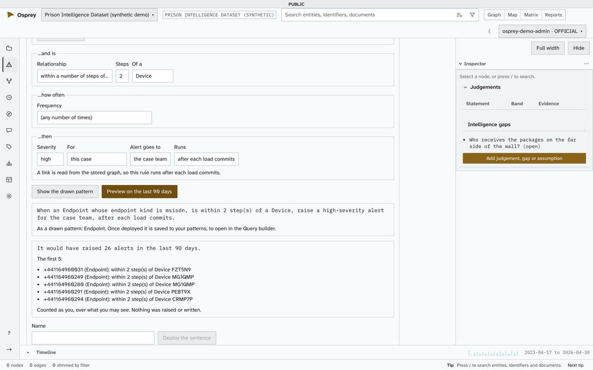

Where it applies
One platform, four kinds of investigation
Every investigation comes down to the same questions: who is behind it, how two people are linked, where and when, and what leadership needs to see. OspreyFlow answers them on one canvas.
Crime and intelligence analysis
For police forces, intelligence units and investigators.
- Call records, intelligence reports, people, vehicles and places in one network.
- The shortest routes between two people, each step backed by its records.
- Who holds a group together: ranking by centrality, not just by who is busiest.
- A drawing board for what an analyst knows that the data does not yet say, graded and sourced.
- Every link traced to its source, for disclosure.

Fraud detection
For counter-fraud teams in government, insurers and any organisation paying money out.
- Shared addresses, bank accounts, devices and directors across claims, payments and suppliers.
- How rare a shared value is, shown beside each link, so a common postcode does not drown a shared bank account.
- Rules that raise an alert when a pattern returns, previewed on past data before they go live.
- Rows held for a reviewer before a load commits.
- Report packs and dashboards for the people who answer for the money.


Anti-money laundering and sanctions screening
For regulators and regulated firms.
- Customers screened against the UK Sanctions List, OFAC and the EU consolidated list, and re-screened when a list you load changes.
- A match is a suggestion until a person confirms it.
- Typology templates: structuring, rapid movement, circular flow, high-risk jurisdictions, large cash and dormant accounts.
- Layered ownership read as a network.
- A closing reason on every alert, and a second person for the decisions that matter.

Prison and offender intelligence
For prison intelligence units and offender management.
- Cell-shares, visits, calls, incidents and finds read together.
- Events on a plan of the establishment, by wing and yard, and on a clock of the week.
- Who is the broker between groups, not only who is the most connected.
- Intelligence reports read by a model, with the names it finds waiting for an analyst to accept.
- The GOV.UK look for a service on a gov.uk domain.

Something else?
OspreyFlow has a domain model for each dataset, so it adapts to fields beyond these four, cyber among them. Tell us what you are investigating.